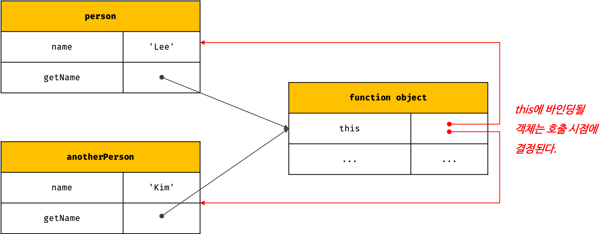
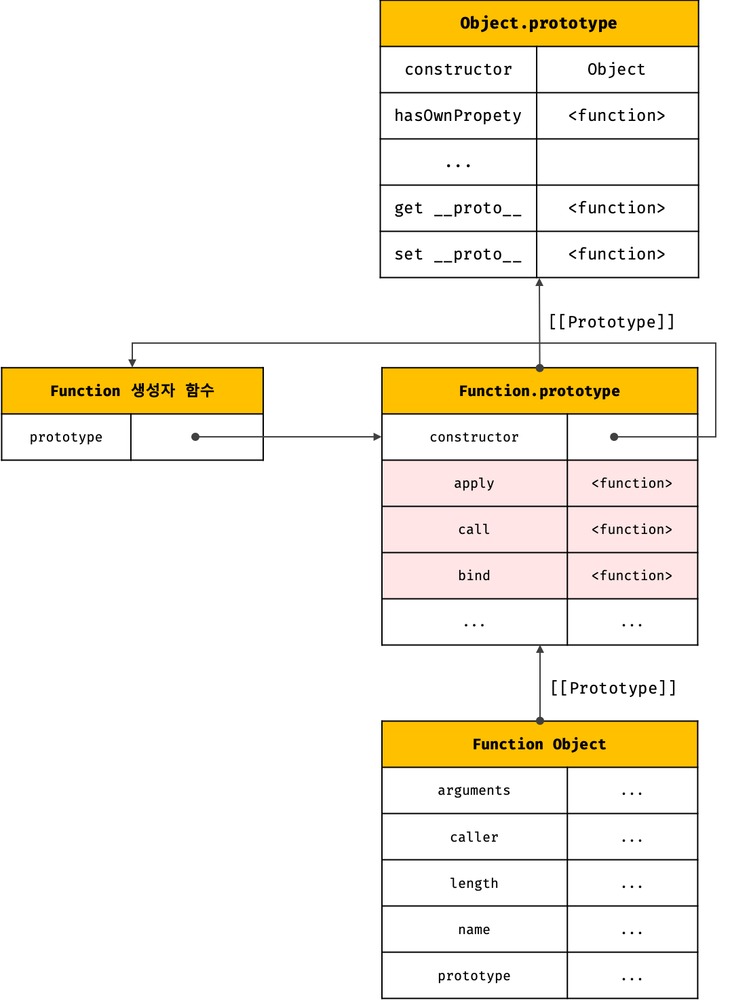

// getName 메서드를 일반 함수로 호출 console.log(getName()); // '' // 일반 함수로 호출된 getName 함수 내부의 this.name은 브라우저 환경에서 window.name과 같다. // 브라우저 환경에서 window.name은 브라우저 창의 이름을 나타내는 빌트인 프로퍼티이며 기본값은 ''이다. // Node.js 환경에서 this.name은 undefined다.
메서드 내부의 this는 자신을 호출한 객체를 가리킨다.
프로토타입 메서드 내부에서 사용된 this도 일반 메서드와 마찬가지로 해당 메서드를 호출한 객체에 바인딩된다.
1 2 3 4 5 6 7 8 9 10 11 12 13 14 15 16 17
functionPerson(name) { this.name = name; }
Person.prototype.getName = function () { returnthis.name; };
const me = new Person('Lee');
// getName 메서드를 호출한 객체는 me다. console.log(me.getName()); // ① Lee
Person.prototype.name = 'Kim';
// getName 메서드를 호출한 객체는 Person.prototype이다. console.log(Person.prototype.getName()); // ② Kim
①의 경우, getName 메서드를 호출한 객체는 me다. 따라서 getName 메서드 내부의 this는 me를 가리키며 this.name은 ‘Lee’이다. ②의 경우, getName 메서드를 호출한 객체는 Person.prototype이다. 따라서 getName 메서드 내부의 this는 Person.prototype을 가리키며 this.name은 ‘Kim’이다.
// new 연산자와 함께 호출하지 않으면 생성자 함수로 동작하지 않는다. 즉, 일반적인 함수의 호출이다. const circle3 = Circle(15);
// 일반 함수로 호출된 Circle에는 반환문이 없으므로 암묵적으로 undefined를 반환한다. console.log(circle3); // undefined
// 일반 함수로 호출된 Circle 내부의 this는 전역 객체를 가리킨다. console.log(radius); // 15
2.4. Function.prototype.apply/call/bind 메서드에 의한 간접 호출

apply, call, bind 메서드는 Function.prototype의 메서드다. 따라서 이들 메서드는 모든 함수가 상속받아 사용할 수 있다.
apply와 call 메서드의 본질적인 기능은 함수를 호출하는 것이다. 이들은 함수를 호출하면서 첫 번째 인수로 전달한 특정 객체를 호출한 함수의 this에 바인딩한다. apply와 call 메서드는 호출할 함수에 인수를 전달하는 방식만 다를 뿐 동일하게 동작한다.
apply와 call 메서드는 arguments 객체와 같은 유사 배열 객체에 배열 메서드를 사용하는 경우 유용하게 사용된다.
bind 메서드는 apply나 call 메서드와 달리, 함수를 호출하지 않고 this로 사용할 객체만 전달한다. bind 메서드는 메서드의 this와 메서드 내부의 중첩 함수 또는 콜백 함수의 this가 불일치하는 문제를 해결하기 위해 유용하게 사용된다.
아래 예제들을 통해 차근차근 알아보자.
1 2 3 4 5 6 7
/** * 주어진 this 바인딩과 인수 리스트 배열을 사용하여 함수를 호출한다. * @param thisArg - this로 사용할 객체 * @param argsArray - 함수에게 전달할 인수 리스트의 배열 또는 유사 배열 객체 * @returns 호출된 함수의 반환값 */ Function.prototype.apply(thisArg[, argsArray])
1 2 3 4 5 6 7
/** * 주어진 this 바인딩과 ,로 구분된 인수 리스트를 사용하여 함수를 호출한다. * @param thisArg - this로 사용할 객체 * @param arg1, arg2, ... - 함수에게 전달할 인수 리스트 * @returns 호출된 함수의 반환값 */ Function.prototype.call (thisArg[, arg1[, arg2[, ...]]])
1 2 3 4 5 6 7 8 9 10 11 12
functiongetThisBinding() { returnthis; }
// this로 사용할 객체 const thisArg = { a: 1 };
console.log(getThisBinding()); // window
// getThisBinding 함수를 호출하면서 인수로 전달한 객체를 getThisBinding 함수의 this에 바인딩한다. console.log(getThisBinding.apply(thisArg)); // {a: 1} console.log(getThisBinding.call(thisArg)); // {a: 1}
apply와 call 메서드는 호출할 함수에 인수를 전달하는 방식만 다를 뿐 동일하게 동작한다.
apply와 call 메서드의 대표적인 용도는 arguments 객체와 같은 유사 배열 객체에 배열 메서드를 사용하는 경우다. arguments 객체는 배열이 아니기 때문에 Array.prototype.slice 같은 배열의 메서드를 사용할 수 없으나 apply와 call 메서드를 이용하면 가능하다.
bind 메서드는 apply나 call 메서드와 달리, 함수를 호출하지 않고 this로 사용할 객체만 전달한다.
1 2 3 4 5 6 7 8 9 10 11 12
functiongetThisBinding() { returnthis; }
// this로 사용할 객체 const thisArg = { a: 1 };
// bind 메서드는 함수에 this로 사용할 객체를 전달한다. // bind 메서드는 함수를 호출하지는 않는다. console.log(getThisBinding.bind(thisArg)); // getThisBinding // bind 메서드는 함수를 호출하지는 않으므로 명시적으로 호출해야 한다. console.log(getThisBinding.bind(thisArg)()); // {a: 1}
bind 메서드는 메서드의 this와 메서드 내부의 중첩 함수 또는 콜백 함수의 this가 불일치하는 문제를 해결하기 위해 유용하게 사용된다.
1 2 3 4 5 6 7 8 9 10 11 12 13 14
const person = { name: 'Lee', foo(callback) { // ① setTimeout(callback, 100); } };
person.foo(function () { console.log(`Hi! my name is ${this.name}.`); // ② Hi! my name is . // 일반 함수로 호출된 콜백 함수 내부의 this.name은 브라우저 환경에서 window.name과 같다. // 브라우저 환경에서 window.name은 브라우저 창의 이름을 나타내는 빌트인 프로퍼티이며 기본값은 ''이다. // Node.js 환경에서 this.name은 undefined다. });
bind 메서드를 통해 콜백 함수 내부의 this를 외부 함수 내부의 this와 일치시켜 줄 수 있다.
1 2 3 4 5 6 7 8 9 10 11
const person = { name: 'Lee', foo(callback) { // bind 메서드로 callback 함수 내부의 this 바인딩을 전달 setTimeout(callback.bind(this), 100); } };
person.foo(function () { console.log(`Hi! my name is ${this.name}.`); // Hi! my name is Lee. });